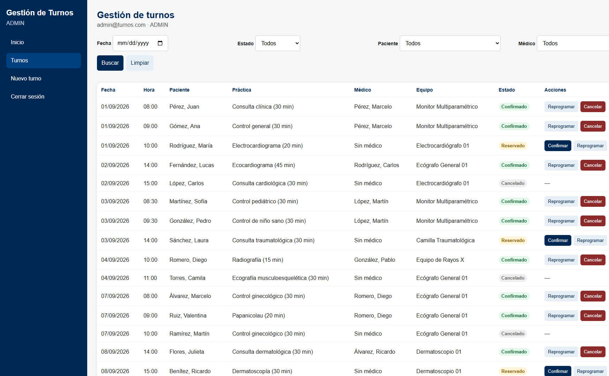
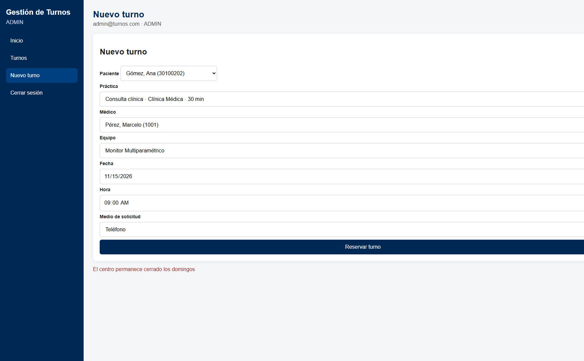
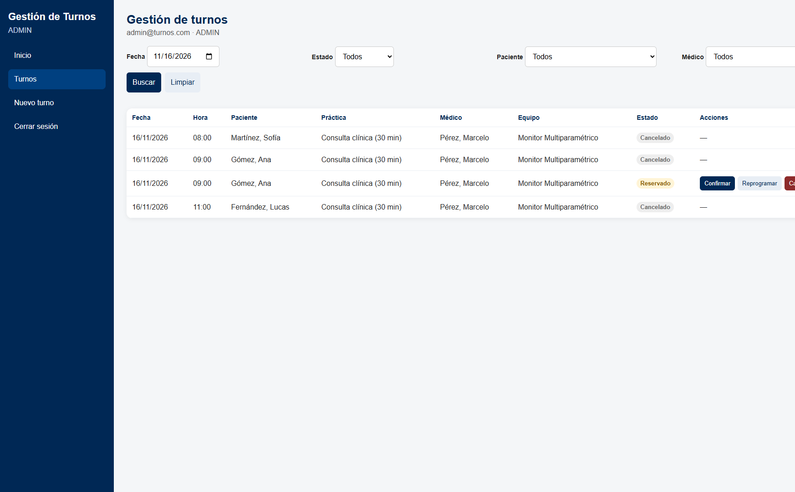

Integrantes: Lima Ivan.
Repositorio: https://github.com/AkumaVH/gestion-turnos
Hay tres perfiles: administrador, médico y paciente. El token JWT protege la API y cada rol solo ve sus pantallas y sus datos. El médico no puede reservar ni confirmar. El paciente solo gestiona sus turnos.
La mejora es la gestión del turno de punta a punta: reservar, confirmar, reprogramar (si estaba confirmado vuelve a Reservado) y cancelar, más filtros por fecha, estado, paciente y médico.
Backend: server.js, routes/, controllers/, services/turnoService.js, middlewares/. Base: database/gestion_turnos.sql y database/migracion.sql. Frontend: frontend/index.html, frontend/pages/dashboard.html, frontend/js/ y frontend/css/estilos.css.
Listado y acciones según el estado.

El domingo se rechaza. El filtro muestra el turno reservado.

